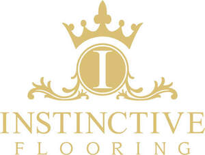

Trade Mark Journal No.2025/025 20 June 2025
UK00004214203 5 June 2025 (1,2,3,6,8,17,19,27,35,37)

- Class 1
- Additives (Chemical -) for flooring plaster; Tile adhesives; Adhesives for floor, ceiling and wall tiles; Wall tile adhesives; Adhesives for applying floor tiles; Adhesives for floor coverings.
- Class 2
- Paint for concrete floors; Wood floor finishes.
- Class 3
- Polish for furniture and flooring; Wax for parquet floors.
- Class 6
- Metal flooring; Tile floorings of metal; Blocks (Metal -) for use in flooring construction; Metal floorings; Floor tiles of metal; Metal floor tiles; Floor tiles of metal for building.
- Class 8
- Carpet and flooring staple removers [hand tools].
- Class 17
- Sound control flooring underlayment; Sound absorbing flooring underlayment; Under flooring sheets of rubber; Adhesive anti-slip tape for flooring applications.
- Class 19
- Hardwood flooring; Laminate flooring; Wood tile flooring; Parquet flooring; Flooring (Parquet -); Wood flooring; Vinyl flooring; Flooring underlay; Parquet wood flooring; Parquet flooring of wood; Flooring underlays; Bamboo flooring; Fabric for underlayment of flooring; Parquet flooring of cork; Wooden flooring; Laminated parquet flooring; Flooring tiles (Non-metallic -); Rubber flooring; Wood veneer parquet flooring; Ceramic tiles for flooring of building; Parquet flooring and parquet slabs; Flooring (Non-metallic -); Parquet flooring made of wood; Flooring screeds; Ceramic tiles for flooring and facing; Artificial wood flooring; Ceramic tiles for flooring and lining; Flooring made of wood; Parquet flooring made of cork; Tile flooring, not of metal; Laminate flooring, not of metal; Flooring underlay made of cork; Floor tiles of wood; Flooring materials (Non-metallic -); Floor coverings of wood; Tile floorings, not of metal; Synthetic flooring materials or wall-claddings; Hardwood decking boards; Ceramic tiles for floors; Tiles of ceramic for floors; Blocks (Non-metallic -) for use in flooring construction; Tiles (Non-metallic -) for floors; Veneer for floors; Ceramic tiles for covering floors; Rubber floor tiles; Ceramic floor tiles; Wood siding; Wood sports floors; Ceramic tiles for external floors; Paver tiles; Non-metallic tiles for ceiling cladding; Stucco tiles; Laminated parquet floorboards; Concrete floors; Ceramic tiles for internal floors; Ceramic floor coverings; Floor tiles (Non-metallic -) for building; Athletic flooring, not of metal; Floor boards [of wood]; Floor boards of wood; Wood paneling; Terra-cotta floor tiles; Parquet floor boards; Floor boards (Parquet -); Wood laminates; Glazed ceramic floor tiles; Mosaic floor tiles; Vinyl floor coverings for forming a floor.
- Class 27
- Linoleum tiles [floor coverings]; Tiles (Carpet -); Bathroom tiles [carpet]; Carpet tiles; Carpet tiles for covering floors; Vinyl floor coverings for existing floors; Carpet tile backing; Linoleum tiles; Floor tiles made of carpet; Floors coverings of rubber; Carpeting; Vinyl floor coverings; Floor coverings [for existing floors]; Underlays for carpeting; Tiles made of linoleum for fixing to existing floors; Coverings for existing floors; Floor tiles made of cork; Carpet tiles made of plastics; Carpet tiles made of rubber; Hard surface coverings for floors; Linoleum for use on floors; Linoleum for covering existing floors; Carpet underlay; Carpet tiles made of textiles; Floor mats of cork; Cork tiles.
- Class 35
- Retail services in relation to floor coverings.
- Class 37
- Repair of laminate flooring; Maintenance of laminate flooring; Installing wood flooring; Fitting of laminate flooring; Repair of wood flooring; Maintenance of wood flooring; Fitting of wood flooring; Repair of artificial wood flooring; Maintenance of artificial wood flooring; Fitting of artificial wood flooring; Maintenance and repair of flooring; Repair of floor coverings; Construction of floors; Laying floor tile.
INSTINCTIVE FLOORING LIMITED